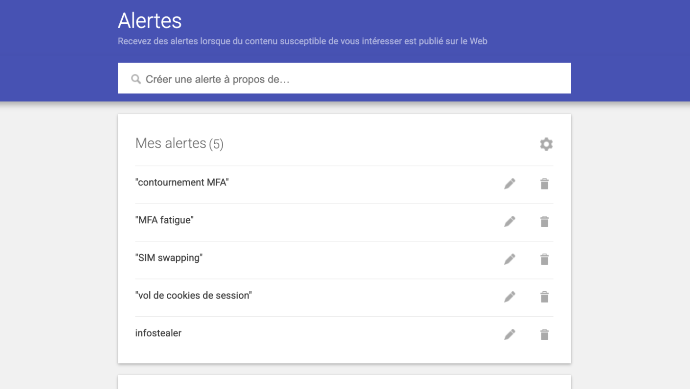
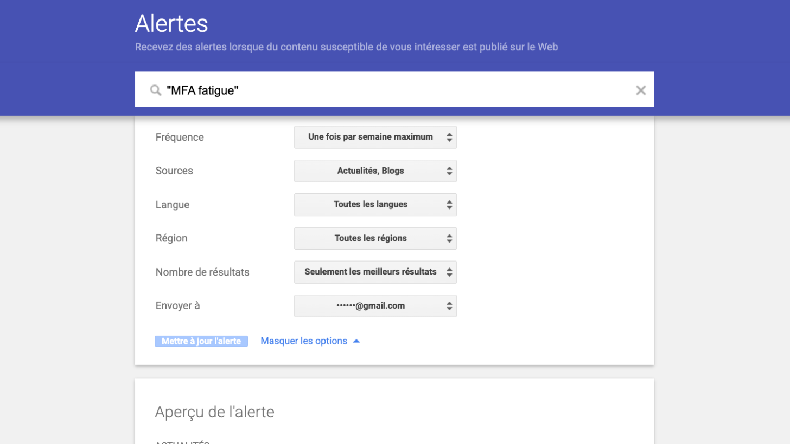

MFA fatigue, SIM swapping, vol de cookies de session — comment l'authentification multifacteur est attaquée aujourd'hui, et comment un technicien SISR s'en protège.
Surveillance continue et organisée des évolutions d'un domaine, pour anticiper les menaces et adapter ses pratiques.
Action de prouver son identité à un système avant d'y accéder.
Ce que je sais (mot de passe, PIN), ce que je possède (téléphone, clé), ce que je suis (empreinte, visage).
Combinaison d'au moins deux facteurs de types différents. Un mot de passe volé seul ne suffit plus à se connecter.
Code à usage unique (One-Time Password), reçu par SMS ou généré par une application comme Google ou Microsoft Authenticator.
Demande « Approuver / Refuser » envoyée directement sur le smartphone de l'utilisateur.
Une fois connecté, le site dépose un cookie qui prouve que l'authentification — MFA comprise — a déjà été effectuée.
Clé cryptographique liée au site et à l'appareil, ce qui la rend résistante au phishing.
La MFA est-elle encore suffisante face aux attaquants, et comment un technicien SISR doit-il la déployer pour qu'elle résiste à leurs contournements ?
La MFA est la mesure n°1 recommandée par l'ANSSI et la CNIL pour sécuriser les accès. Les attaquants ne cherchent donc plus à casser le mot de passe seul : ils visent le second facteur, ou ce qui se passe juste après la connexion. Trois techniques dominent aujourd'hui : la MFA fatigue, le SIM swapping et le vol de cookies de session.
Lien avec le BTS SIO SISR : cette problématique touche directement la sécurisation des accès (Active Directory, Microsoft Entra ID, VPN) et l'épreuve E7 « Cybersécurité des services informatiques ».
Mots-clés suivis : « MFA fatigue », « contournement MFA », « SIM swapping », « vol de cookies de session », « infostealer ».
Fréquence hebdomadaire, sources « Actualités + Blogs », toutes langues (surtout français et anglais), envoi par e-mail.

Mes 5 alertes Google Alertes.

Réglages d'une alerte : une fois par semaine, Actualités + Blogs, toutes langues.
Je consulte ces sites directement, en complément des alertes, au moins une fois par semaine.
Méthode : tri hebdomadaire des résultats. Je ne garde que ce qui apporte un fait nouveau, que je résume en deux ou trois lignes et que je classe par technique (MFA fatigue, SIM swapping, vol de cookies).
Idée clé : aucune de ces attaques ne casse la cryptographie de la MFA. Elles exploitent l'humain, l'opérateur téléphonique, ou la session déjà ouverte.
| MFA fatigue | SIM swapping | Vol de cookies | |
|---|---|---|---|
| Aussi appelé | Push bombing | SIM jacking | Session hijacking, pass-the-cookie |
| MFA visée | Notifications push | Codes par SMS ou appel | Toutes, même les plus solides |
| Prérequis | Avoir le mot de passe | Infos personnelles sur la victime | Malware sur le poste ou faux site relais |
| Ce qu'on exploite | Lassitude et urgence | Procédure de l'opérateur | Le cookie post-MFA |
| Signe d'alerte | Rafale de notifications | Perte soudaine de réseau | Souvent aucun |
Schéma — MFA fatigue (push bombing)
L'attaquant possède déjà l'identifiant et le mot de passe de la victime.
Il tente de se connecter en boucle, déclenchant des dizaines de notifications, souvent la nuit.
Un complice appelle la victime en se faisant passer pour le support, pour la pousser à valider.
La victime approuve une notification pour que ça s'arrête : l'attaquant est connecté.
Schéma — SIM swapping
Nom, date de naissance, adresse... récupérés via réseaux sociaux ou fuites de données.
L'attaquant se fait passer pour la victime auprès de l'opérateur téléphonique, parfois avec un complice interne.
Le numéro bascule sur une carte SIM contrôlée par l'attaquant ; la victime perd le réseau.
L'attaquant reçoit les SMS de code et réinitialise les comptes de la victime.
Schéma — Vol de cookies de session (deux voies possibles)
Logiciel piraté ou pièce jointe installe un infostealer (Lumma, RedLine, Vidar...).
Les cookies de session volés sont revendus sur des marchés clandestins.
La victime arrive sur un site relais type Evilginx qui imite le vrai site.
Le relais capture le cookie émis juste après une MFA pourtant réussie.
L'attaquant importe le cookie dans son propre navigateur : il est connecté sans mot de passe ni MFA.
Variante bonus — Attaque du help desk (Scattered Spider)
L'attaquant appelle le support informatique en se faisant passer pour un salarié (parfois identifié au préalable sur LinkedIn), et demande la réinitialisation du mot de passe et de la MFA sur un nouveau téléphone. Si le support ne vérifie pas réellement l'identité de l'appelant, l'attaquant obtient un accès complet sans jamais affronter la MFA d'origine.
Du plus récent au plus ancien. Chargée depuis data/veille.json — pour ajouter un article, il suffit de compléter ce fichier, sans toucher au HTML.
On ne lâche pas la MFA : on choisit une MFA résistante au phishing (FIDO2, passkeys) et on protège ce qui l'entoure — la session, le support, l'utilisateur.
| Attaque | Parade principale | Mesures complémentaires |
|---|---|---|
| MFA fatigue | Number matching | Limiter les notifications, afficher le lieu de connexion, alerter après plusieurs refus |
| SIM swapping | Ne plus utiliser le SMS comme second facteur (recommandation R8 de l'ANSSI) | Application ou clé FIDO2, code secret opérateur, réagir dès la perte de réseau |
| Vol de cookies | Session liée à l'appareil (DBSC, Chrome 146), accès conditionnel « appareil conforme » | Sessions courtes, révocation après incident, EDR, interdire les logiciels piratés |
| Help desk | Vérification d'identité stricte avant tout reset de MFA | Rappel sur un numéro connu, validation du manager, alerte sur les resets de comptes à privilèges |
La MFA reste la meilleure protection des accès, mais elle n'est plus suffisante seule. Les attaquants ne cherchent plus à casser le mot de passe : ils contournent le second facteur en jouant sur l'humain, sur l'opérateur téléphonique ou sur la session déjà ouverte.
Cette veille mobilise l'authentification et l'ingénierie sociale, selon la démarche attendue en E7 : menace → recommandation officielle (ANSSI, cybermalveillance.gouv.fr) → parades en prévention, détection et réaction.
En alternance chez Upper-Link, j'utilise moi-même la MFA au quotidien pour accéder aux outils de l'entreprise, sans m'être vraiment demandé jusqu'ici comment elle pouvait être contournée. Cette veille m'a fait comprendre que le maillon faible n'est souvent pas la technique, mais l'humain et les procédures autour : une notification validée par lassitude ou un support trop conciliant suffit.
Comme je passe du développement (SLAM) à l'infrastructure (SISR), elle m'a aussi donné de bons réflexes pour la suite : privilégier une MFA résistante au phishing, protéger les sessions et sensibiliser les utilisateurs. Aujourd'hui, je ne valide plus jamais une demande de connexion que je n'ai pas lancée moi-même.
Guides institutionnels et articles cités dans la frise, avec leur date de publication et ma date de consultation.